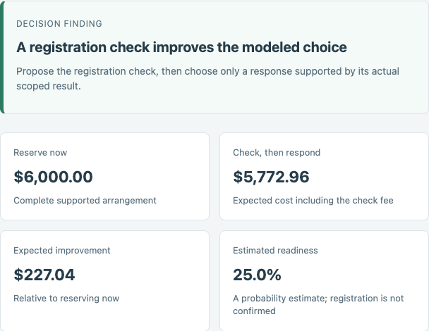

You can act now, or pay for an answer that might change your choice. A shipment registration check and a campaign preference test share that decision structure. In both, the information has to arrive while a useful response is still available.
The Investigate Before Acting pattern compares the complete investigation and its possible responses with the best supported choice now. These fictional examples show how its evidence, objective and operating limits change between applications.
Start with the best supported choice now.
Maya can reserve Backup freight for $6,000 without buying another check. Leah can choose a small invoiced growth campaign with $8,000 expected contribution under the supplied assumptions. Those are the outside options each investigation has to improve on after its fee and delay.
For shipping, the objective is to minimize complete shipment expense. For growth, it is to maximize expected contribution after campaign and test expense. The shared assessment approach can support both objectives, but the money represents different consequences.
The candidate being assessed is a complete policy: obtain information, receive any possible report, then take an available response. A favorable report alone leaves most of that decision unspecified.
Shipment registration: a check can enable a cheaper route.
Direct freight costs $4,000 but requires actual, current registration confirmation for the relevant scope. Backup is already supported at $6,000. A probability of registration cannot replace the confirmation that Direct needs.
In the standalone Python shipment example, an estimator using synthetic demonstration history proposes a 24.96% registration probability. Separate report frequencies describe confirmation, no registration and an inconclusive result. Those numerical inputs inform a comparison of checking with reserving now.
A timely $200 check produces $5,772.96 expected complete expense, including its fee. That is $227.04 less than Backup now under the accepted illustrative numerical basis. Usable confirmation enables Direct at $4,200 including the fee; the other reports lead to Backup at $6,200 including the fee.


Now change only the fee to $2,500. Expected checking expense becomes $8,072.96 and Backup now is preferred. The registration estimate stays the same. The proposed information loses its advantage because its complete price changes.
Payment preference: a signal can change the campaign.
Leah’s small invoiced campaign assumes ten customers in either of two possible customer-response situations and contributes $8,000 after its $2,000 campaign expense. The medium prepaid campaign contributes $16,000 with twenty customers or loses $2,000 with two. With the supplied equal prior probabilities, medium has $7,000 expected contribution, so small is the better choice now.
A proposed $500 preference test can return favorable, unfavorable or inconclusive signals. It is nonbinding: it collects no orders, deposits or payments and creates no delivery obligation. Its imperfect signal concerns payment preference; it does not measure the campaign’s causal effect on sales.
The example assigns hypothetical signal probabilities: favorable, unfavorable and inconclusive occur with 70%, 10% and 20% probabilities in the stronger-response situation, and 10%, 70% and 20% in the weaker one. Every signal remains possible in both situations.
The complete response chooses medium after a favorable signal and small after either other signal. A one-day test before the day-three commitment cutoff yields $9,800 expected contribution after the $500 fee: $1,800 above choosing now.

This numerical preference belongs to the optional learning assessment’s expected-contribution objective. The underlying operating comparison establishes which campaigns fit funding and capacity without ranking them.
Compare the complete policies.
| Decision element | Shipment registration | Payment preference |
|---|---|---|
| Best supported choice now | Reserve Backup for $6,000. | Choose small for $8,000 expected contribution. |
| Useful report | Current, correctly scoped confirmation enables Direct. | A favorable imperfect signal changes the campaign choice. |
| Response to other reports | Retain Backup, including after an inconclusive result. | Choose small after an unfavorable or inconclusive signal. |
| Comparison objective | Minimize expected complete shipment expense. | Maximize expected contribution after expense. |
| Action window | Complete the response before the noon reservation cutoff. | Commit to the campaign before day three’s cutoff. |
Both assessments count the investigation fee once, include unhelpful reports and check the responses still available. Neither comparison obtains its value by considering only the most encouraging result.
Now change only the time it takes to learn. A shipment check leaving the response ready at 3 p.m. misses noon. A four-day preference test misses the day-three campaign cutoff. Choosing now is preferred in each case: the relevant response window has closed.
Operating conditions remain part of the comparison after the fee and delay. A favorable growth signal cannot supply missing delivery capacity. A registration estimate cannot waive Direct’s confirmation requirement.
Adapt the evidence, objective and operating responses.
The shipment report and growth interface are different implementations of the approach. Python supplies the shipment estimator, orchestration and presentation; authored Decision Lab apps assess operating eligibility and information value. The growth workflow exposes its learning comparison alongside its operating findings.
A shipment confirmation has a declared scope and currency. A favorable preference signal can still occur when customer response is weak. Moving the pattern between domains requires explicit meanings for reports, supported numerical premises, complete responses and the objective used to compare consequences.
The Python application’s review of numerical premises is its own policy. It authenticates neither registration records nor people. If the estimate is unsupported, its learning comparison can remain unassessed while the independent planning finding stays available. Growth likewise retains its operating comparison when optional probability assumptions are missing.
Bring your proposed investigation into the comparison.
Start with an optional investigation that could change a consequential choice. Identify:
- The best supported action available without buying information.
- Every possible report, including an inconclusive result, and the response after each.
- The basis for numerical probabilities and the actual meaning of each report.
- The fee, delay, response cutoff and operating conditions after learning.
- The objective: which consequences count as a better outcome?
The information-value assessment can then compare the whole investigation-and-response alternative with acting now. Its result supports a particular investigation under particular assumptions. A purchase decision still needs the responsible person’s judgment about that basis and objective.